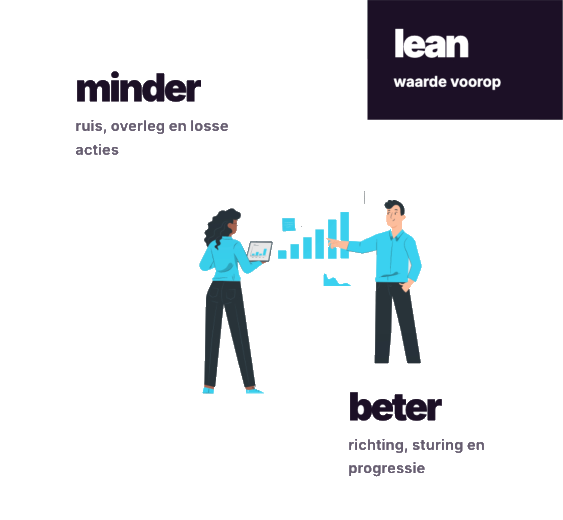

Richting
Een helder doel maakt kiezen makkelijker.
Lean marketing
Minder ruis. Meer richting. Ik help je scherp te krijgen wat ertoe doet, welke stap nu nodig is en hoe je koers houdt.
Voor ondernemers en organisaties in de Achterhoek.

De kern
Er gebeurt vaak genoeg. Alleen niet altijd in dezelfde richting.
Ik kijk met afstand, stel de vragen die intern blijven liggen en help kiezen wat nu echt verschil maakt.
Een helder doel maakt kiezen makkelijker.
Alle aandacht naar wat nu telt.
Duidelijke keuzes en een volgende stap.
Zichtbaar vooruit, stap voor stap.
Toegepast bij
Marketingervaring bij bedrijven en organisaties waar richting en resultaat ertoe doen.
Aanbod
Altijd vanuit dezelfde basis: eerst scherp krijgen wat waarde toevoegt.
Website laten maken
Ik ben benieuwd naar jouw bedrijf: wat maakt het bijzonder en waarom kiezen klanten voor jou? Daarna volgt een complete website die dat zichtbaar maakt.
Advies / consultancy
Ik kijk mee, breng richting en help de juiste keuzes maken. Jij en je team houden de uitvoering; ik zorg voor houvast en een heldere koers.
Kennismaken
Plan een half uur. Dan wordt snel duidelijk waar de meeste winst zit en of ik daarbij pas.